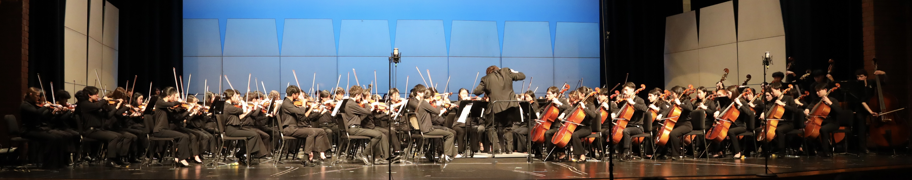

Music
Violin

I’ve been playing the violin since I was five years old, and it’s become an inseparable part of my life. There’s something truly magical about how this instrument can express both power and delicacy—how a single bow stroke can fill a room with emotion. The violin fascinates me because it offers an infinite combination of tones and colors, each capable of telling a different story. I draw a lot of inspiration from artists like Lindsey Stirling and David Garrett, who redefine what the violin can be through their creativity and stage presence. Their blend of classical skill and modern artistry reminds me that music is a language that keeps evolving—and that I can always find new ways to express myself through it. Check out their YouTube channels!
Over the years, I’ve recorded many of my performances, each capturing a different stage of my musical journey. I’ve included a collection of some of my favorite pieces here—ranging from recent recordings to one of my earliest, made when I was just eight years old. Looking back on these moments reminds me how much I’ve grown as a musician and how deeply the violin has shaped my life.
| 2025 | 2025 | 2025 |
| 2025 | 2024 | 2024 |
| 2024 | 2024 | 2024 |
| 2023 | 2023 | 2023 |
| 2023 | 2022 | 2022 |
| 2022 | 2020 | 2019 |
| 2019 | 2018 | 2017 |
| 2016 |
Piano

I have been playing the piano for over seven years. It is a remarkably powerful instrument—capable of filling a concert hall with sound rich enough to rival an entire orchestra. Among my favorite composers is Frédéric Chopin, whose music continues to inspire my playing through its depth, emotion, and technical brilliance.
Over the years, I have recorded many of my performances and compiled a collection of pieces that reflect my musical journey— including some of my earliest recordings, dating back to when I was just ten years old.
| 2025 | 2024 | 2023 |
| 2021 | 2020 | 2019 |
| 2018 |
Glenbrook Symphonic Orchestra
I serve as the co–assistant concertmaster of the Glenbrook Symphony Orchestra (GSO). The GSO is the District 225 honors orchestra of Northfield, Illinois, uniting talented student musicians from both Glenbrook North and Glenbrook South High Schools. Comprising more than 150 members, the orchestra features a full complement of string, wind, brass, and percussion instruments.

| 2025 | 2025 | 2024 |
| 2024 | 2023 | 2022 |